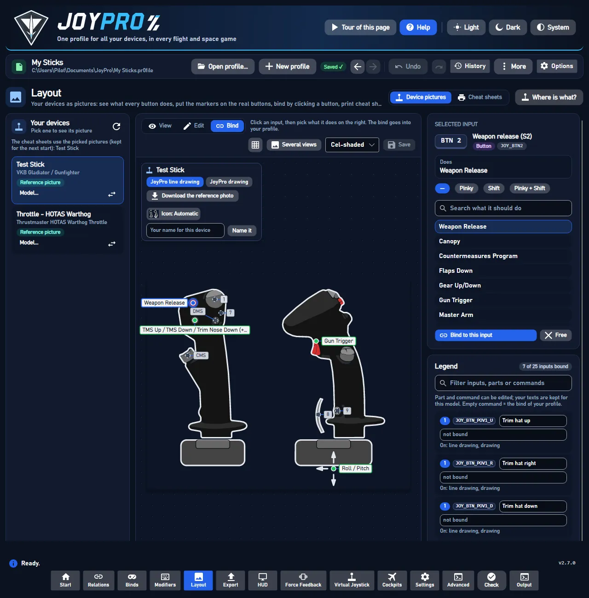

#Ez az eszköz saját stílust használ
JelölőnégyzetmegírvaA mutatott eszköznek saját stílust ad: a puskája színeit, betűtípusát és jelölőit.
Az eszköz lapjával együtt tárolódik, és az Elrendezés megosztása... funkcióval együtt utazik.
Az Elrendezés oldal minden eszközéről képet mutat azzal, hogy mit csinál az egyes gombok, Hat-ek és tengelyek. Két része van, amelyek között felül vált: Eszközképek (egyszerre egy eszköz: megtekintés, a jelölők javítása, kiosztás a képen) és Puskák (az összes eszköz nyomtatható képei, repülőgépenként). Ezen az oldalon semmi sem változtat egy játékon, kivéve a Kiosztás módban készített kiosztást, amely bármely más kiosztáshoz hasonlóan a profiljába kerül.


A Mi hol van? egy ablakot nyit meg az összes eszközével. Minden vezérlő mellett ott áll, mit csinál az a játékában. Az oldal jobb felső részén, a Kezdőlapon és az értesítési terület menüjében találja.
A Játék követése átvált arra a játékra, amellyel játszik, a DCS-ben pedig arra a repülőgépre, amellyel repül. Bővebben: Mi hol van? Nézze meg, mit csinál az egyes gombok.


A JoyPro minden DCS-repülőgép kneeboardjára elhelyezhet egy oldalt a kiosztásaival. Közvetlenül a pilótafülkében olvashatja.
Megváltoztatott egy gombot? Nyomja meg újra a Felhelyezés a kneeboardra gombot: a JoyPro lecseréli a saját oldalait. A többi kneeboard-oldala megmarad. Bővebben: Kiosztásaim megtekintése a DCS kneeboardon.



Az eszközei képei, minden kiosztással a gombok mellé írva, nyomtatásra vagy egy második képernyőn tartásra. Jelölje be az eszközöket, játékokat és repülőgépeket, válassza az Áttekintés eszközönként és/vagy az Egy repülőgépenként lehetőséget, majd nyomja meg a Puskák létrehozása gombot. A képek (PNG) a kimeneti mappába kerülnek; az előnézet megmutatja őket.


Egy puska megmutatja, mit csinálnak a gombok egy repülőgépben, a játék saját parancsneveivel, ha azt választja az előnézeti mezőben. A Kiosztás módban készített kiosztást a következő exportálás beírja a játékba, ugyanúgy, mint a Kiosztások oldalon rögzített kiosztást.
A vászon fölötti képsávban az eszköz minden képéhez van egy gomb. A 3D gomb melletti mező a rajzstílust választja: Vonalak vagy sima színek vastag körvonalakkal (a színek a Beállítások > Rajzok alatt). A 3D modellel rendelkező eszközök 3D-nézet gombot kapnak: húzással forgathat, a görgő nagyít, dupla kattintás visszaállít. A sík rajz az, amit a puskák nyomtatnak, és amelyen a Szerkesztés mód dolgozik.
A JoyPro az eszközt az USB-azonosítója, a neve és a jelentett bemenetei alapján azonosítja, több száz modellt tartalmazó katalógusból. Ha nem tudja eldönteni (cserélhető markolatú talp, több termékhez egy USB-azonosító, ismeretlen eszköz), a kép fölött megkérdezi: Melyik az?, a jelöltek csempéivel, elöl a Legvalószínűbb, továbbá A legvalószínűbb megtartása, Nincs listázva: keresés a katalógusban, Most nem. Ismeretlen eszköznél a fajtáját is kiválasztja. A Modell... > Másik modell választása... bármikor újra megkérdezi.
Ha a látható kép egyetlen rész helyzetét sem ismeri („Ezen a képen még nincsenek pozíciók”), a jelölősegéd egy perc alatt elhelyezi őket:
Ha nincs kéznél az eszköz, a Most helyezze el: X megnevezi a következő bemenetet; egy kattintás oda teszi, a Később a többi után kéri újra, a hely nélküli bemenetek pedig címkék, amelyeket a képre húzhat. A Visszavonás visszavonja az utolsó elhelyezést; a Kihagyás a következő bemenetre ugrik; a Leállítás szünetet tart. A Továbbiak alatt van a Tengely, a Leállítás, a Vezérlő hozzáadása (olyan vezérlő, amelyet a JoyPro nem ismer: gomb, kapcsoló, hat, mini-botkormány, forgatógomb, tengely) és az Eltávolítás a képről.


A Továbbiak > Talált helyek (kísérleti) vékony szaggatott köröket rajzol egy fénykép azon pontjaira, amelyek gombnak, hatnak vagy kapcsolónak látszanak. Egy kör közelében tett kattintás (vagy oda ejtett címke) a kör középpontjára teszi a jelölőt. A JoyPro nem tudja, melyik bemenet egy adott pont, ezért magától semmit sem helyez el; fényképeken működik, nem a JoyPro rajzain, és internet nélkül fut.
Ismert pozíciókkal rendelkező képen a Táblázatok (eszköztár) a JoyPro 1 puskáinak kinézetét rajzolja meg: vezérlőcsoportonként egy táblázat a kép körül, vonalak a részekhez, soronként a kiosztott reláció, egy második oszlopban pedig a módosítós kiosztás. Az előnézeti mező választja ki, mit mutatnak a sorok: Relációnevek, vagy egy játék és repülőgép az adott játék saját menücímeivel. Szerkesztés módban húzhat egy táblázatot (rögzítetté válik), a jobb szélét, egy vonal szakaszát vagy egy pontot; az oldalpanelen van Módosítóoszlop, Sor + / Sor −, Rögzített, Vonal újratervezése, Vonal eltávolítása, Felosztás önálló táblázatokra, Újra csoportosítás, Automatikus rendezés és Visszaállítás. A Húzzon egy relációt egy sorra részből húzott és egy sorra ejtett reláció oda lesz kiosztva.


A Több nézet egy eszköz több képét teszi egy oldalra (elöl- és oldalnézet, hogy minden gomb látsszon): Nézet hozzáadása, Saját kép..., Egymás mellé, A nézet szerkesztése, Nézet eltávolítása, Oldal eltávolítása, Vissza egy képre. Az oldal formátuma nyomtatáshoz A4 vagy Letter, képernyőhöz 16:9 / 21:9 / 32:9. A puskák az oldalt nyomtatják.
Ha egy bemenet hiányzik vagy rossz helyen van, javítsa ki Szerkesztés módban (húzás, Vezérlő hozzáadása, Eltávolítás a képről, átnevezés a jelmagyarázatban). Minden ezen a gépen marad, saját rétegként a JoyPro adatai fölött. A Javítás küldése a JoyPro-nak... a változtatást kis fájlként menti, és megnyit egy előre kitöltött hibajegy-űrlapot a GitHubon; ott dönti el, elküldi-e. A Modell... > Visszaállítás a JoyPro alapértelmezésére... egy eszköz összes saját változtatását eltávolítja (előbb rákérdez; a Visszaállítás visszavonása visszateszi őket).
V / E / B módok, N jelölő elhelyezése (elrendezésfájl), Del eltávolítás, Ctrl+Z / Ctrl+Y visszavonás és újra, Ctrl+S mentés, + / - nagyítás, 0 vagy F igazítás, a nyilak Szerkesztés módban léptetnek (Shift: 10 px), az Alt illesztés nélkül húz, egy ráejtett képfájl lesz az Ön fényképe az eszközről.
flowchart TD D["Eszköz<br/>(USB-azonosító, név, bemenetek)"] --> I["DeviceIdentifier<br/>+ eszközkatalógus"] I --> R["Eszközreferencia:<br/>modell, részek, képek"] R --> C["DeviceMarkerCanvas<br/>(Nézet / Szerkesztés / Kiosztás)"] P["Profilkiosztások<br/>(binds list)"] --> C C --> B["binds set"] R --> S["Feliratlap:<br/>táblázatok és vonalak"] S --> L["layout render:<br/>eszközönként és<br/>repülőgépenként egy PNG"] S --> K["layout kneeboard:<br/>DCS Kneeboard vagy<br/>OpenKneeboard"]
MainWindowViewModel.LayoutWorkspace.cs (módok, visszavonás, kiosztás és felszabadítás), LayoutReference.cs (a referenciakép, mentés, segédgazda), LayoutCallouts.cs (táblázatok és vonalak), MultiView.cs, CheatSheets.cs, ReferencePhotos.cs, Device3D.cs, DeviceIcons.cs, ModelChoice.cs, LayoutReset.cs, UnmappedPress.cs; DeviceReferenceViewModel*.cs, MarkerAssistantViewModel.cs, SheetStyleViewModel.cs. A vászon: Views/Controls/DeviceMarkerCanvas.cs, CalloutSheetCanvas.cs, MultiViewCanvas.cs.<data>\DeviceReference): grips.json (modellválaszok), Layouts\ (az Ön pozíciói képenként), Callouts\ (táblázatok és vonalak), MultiView\, ReferencePhotos\<model>\ (SHA-256-tal ellenőrizve), Corrections\, ResetBackups\; az Ön eszközdefiníciói a <data>\Devices mappában. A globális lapstílus a sheet-style.json fájlban.engine layout suggest (kép keresése minden eszközhöz, elrendezés egy Ön által választott képen), engine layout render (a puskák), engine layout image (a profil által használt elrendezésfájl), engine layout template-inspect / engine layout template-save (az elrendezésfájl-szerkesztő), engine layout callouts, engine layout multiview, engine layout titles (a játékok menücímei), engine hud devices (a csatlakoztatott eszközök modelljei), engine devices reference (azonosítás, talált helyek), engine binds list.Az oldal mögötti funkciódokumentáció, a tárolóból generálva:
152 vezérlő, a program forrásából kiolvasva: 152 megírva, 0 a forrásból vett tényekkel (elemleírás, kódmegjegyzés, motorhívás), 0 még bővítendő.
A mutatott eszköznek saját stílust ad: a puskája színeit, betűtípusát és jelölőit.
Az eszköz lapjával együtt tárolódik, és az Elrendezés megosztása... funkcióval együtt utazik.
Elemleírás Átveszi az előbeállítás összes színét, betűtípusát és rajzát
A lapstílusnak a fent választott előbeállítás minden színét, betűtípusát és rajzát adja.
A szerkesztő és a puskák azonnal használják; azonnal mentődik.
Elemleírás Saját előbeállítás törlése
Törli a kiválasztott saját előbeállítását. A használt stílus nem változik.
Elemleírás Ezen a néven menti a stílust, hogy később újra alkalmazhassa
A jelenlegi lapstílust előbeállításként tárolja a fent beírt néven, hogy később újra alkalmazhassa.
A JoyPro előbeállításainak nevét nem fogadja el; az azonos nevű saját előbeállítása lecserélődik.
Elemleírás Módosító és színe hozzáadása
Sort ad hozzá egy módosítószínhez. Írja be a módosítót úgy, ahogy a kiosztásai nevezik: a jelölői és az oszlopa feletti sáv ezt a színt kapja.
Eltávolítja ezt a módosítószínt a lapstílusból; az ilyen módosítós kiosztások jelölői újra a fajtájuk színét kapják.
Elemleírás Nyomjon meg egy gombot, mozdítson meg egy tengelyt vagy Hatot: a sora kivilágít, és a funkciója megjelenik felül. Csak addig olvassa az eszközeit, amíg ez az ablak nyitva van.
Elrendezés ablak, alapból be: nyomjon meg egy gombot, mozgasson egy tengelyt vagy hatot, és a sora kigyullad; a funkciója nagy betűkkel olvasható felül.
A JoyPro csak akkor olvassa az eszközeit, amíg az ablak nyitva van és nincs kis méretre állítva, és egy kis idő bemenet nélkül után már csak 250 ms-onként.
Elemleírás Átvált arra a játékra, amellyel játszik, DCS-ben pedig arra a repülőgépre, amellyel repül (a JoyPro DCS-horga kell hozzá). Nélküle a választása megmarad.
Elrendezés ablak: arra a játékra vált, amellyel játszik, és DCS-ben arra a repülőgépre, amellyel repül.
Enélkül a választása megmarad.
Elemleírás Újra beolvassa a kiosztásokat (miután valamit módosított)
Elrendezés ablak: újra beolvassa a kiosztásokat, például miután valamit módosított a Kiosztások oldalon.
Bezárja az elrendezésablakot. A JoyPro megjegyzi, hol volt és mit mutatott; legközelebb ott nyílik meg.
Ha a JoyPro bezárásakor nyitva marad, a következő indításkor visszatér.
Elemleírás Minden eszköz azzal, hogy mit csinál az egyes kezelőszervek egy játékban és repülőgépen, saját ablakban (második monitorra is); amit megnyom, kivilágít
A Mi hol van? megnyitja az elrendezésablakot: önálló ablak minden eszközzel és az egyes vezérlők funkciójával egy játékhoz és repülőgéphez.
Amit megnyom, kigyullad.
Elemleírás Egy eszköz képe: mit csinálnak a bemenetei, jelölők szerkesztése, kiosztás a képen
Megjeleníti az Eszközképek részt: egyszerre egy eszköz azzal, hogy mit csinálnak a bemenetei, ahol a jelölőket szerkesztheti és a képen oszthat ki.
Elemleírás Nyomtatható képek az eszközeiről azzal, hogy mit csinál minden gomb (nem módosít játékot)
Megjeleníti a Puskák részt: nyomtatható képek az eszközeiről azzal, hogy melyik gomb mit csinál.
Az elkészítésük egyetlen játékot sem változtat meg.
Elemleírás Az eszközei képeinek újbóli megkeresése
Eszközeim megkeresése: minden csatlakoztatott eszközhöz képet keres, és bal oldalon felsorolja őket.
Elemleírás Milyen modell ez az eszköz (másik választása, annak jelzése, hogy nem az Ön eszköze, az utolsó választás visszavonása) és Visszaállítás a JoyPro alapértelmezésére
Megnyitja az eszköz modellmenüjét: Másik modell választása..., Ez nem az én eszközöm, Az utolsó modellválasztás visszavonása, Visszaállítás a JoyPro alapértelmezésére... és visszaállítás után annak visszavonása.
Ennél az eszköznél újra felteszi a Melyik az? kérdést a jelöltjeivel, és a katalóguskeresés egy kattintásnyira van.
Akkor használja, ha a JoyPro rossz típust mutat.
Jelzi, hogy a mutatott típus hibás: az eszközt ismeretlenként kezeli, és a fajtájaként tartja meg, amíg ki nem választja a típusát a kép feletti kérdésben.
Visszahozza ennek az eszköznek a korábbi típusválaszát.
Elemleírás Minden, amit az eszköz képén módosított, törlődik: jelölőpozíciók, táblázatok és vonalak, átnevezett részek, a fényképe, a definíciója és a profil által használt elrendezésfájl. Előbb rákérdez; a Visszaállítás visszavonása visszahozza.
Eltávolít mindent, amit ennek az eszköznek a képén módosított: jelölőhelyzeteket, táblázatokat és vonalakat, átnevezett részeket, a fényképét, a saját definícióját és a profil által használt elrendezésfájlt.
Előbb rákérdez; a visszaállítás visszavonása mindent visszatesz.
"<device> visszaállításának visszavonása": visszatesz mindent, amit a Visszaállítás a JoyPro alapértelmezésére... eltávolított.
Megnyitja az Eszköz cseréje ablakot ezzel az eszközzel mint régivel: a kiosztásai bemenetenként egy másik eszközre kerülnek át, előbb előnézettel.
Nyitott profil kell hozzá; az alkalmazás egy változtatás az Előzményekben.
Elemleírás Az Ön JoyPro 1 elrendezései (.layout fájlok a képeivel): a JoyPro lemásolja őket, és azoknál az eszközöknél jeleníti meg, amelyekhez készültek. A régi mappát csak olvassa.
Kiválasztja a JoyPro 1 mappáját: a JoyPro átmásolja a .layout fájlokat a képeivel, és azokhoz az eszközökhöz mutatja őket, amelyekhez készültek.
A régi mappát csak olvassa.
Elemleírás Képkeresést nyit a kijelölt eszköz gyártójára és modelljére
A böngészőjében képkeresést nyit a kijelölt eszköz gyártójára és típusára.
Mentsen el egy jó képet, tegye a lenti mezőbe, és nyomja meg a Kép használata gombot.
Kiválasztja az eszköz egy képfájlját a Kép használata funkcióhoz.
Elrendezést készít az Ön által választott képre: a motor az eszköz valódi gombjait és tengelyeit jelölőként helyezi rá, és nyitott profil esetén az eszköz elrendezéseként tárolja a puskákhoz.
Elemleírás Megnyitja a mappát az Intézőben (a JoyPro szükség esetén létrehozza)
Megnyitja a kapott közösségi puskák mappáját.
Az oda tett képfájlokat a képsáv az eszközeik 2D-elrendezéseként kínálja fel.
A Javaslat képeket keres a csatlakoztatott eszközökhöz.
A következő indításra is megmarad.
A Javaslat azokhoz az eszközökhöz is képeket keres, amelyekhez a profiljában kiosztások vannak, akár csatlakoztatva vannak, akár nem.
A következő indításra is megmarad.
A Javaslat minden eszközhöz a választott képet a profilban tárolja.
A következő indításra is megmarad.
Elemleírás A kiválasztott képek használata a puskákhoz
A választott javaslatok elrendezésfájljait használja a puskákhoz, és ott bejelöli azokat az eszközöket.
A választások a következő indításra is megmaradnak, amíg az eszköz képét vissza nem állítják, vagy egy másik elrendezés nem lép a helyére.
A választott javaslat elrendezésfájlját megnyitja az elrendezésfájl-szerkesztőben: betölti a fájlt, és a vásznon mutatja.
Újra betölti az Elrendezésfájl mezőben lévő fájlt az elrendezésfájl-szerkesztőbe.
Elemleírás Megtekintés: mit csinál minden bemenet (V)
A kép módját váltja: a Nézet megmutatja, mit csinál az egyes bemenet, a Szerkesztés mozgatja a jelölőket és megnyitja a szerkesztőeszközöket, a Kiosztás egy relációt oszt ki a rákattintott bemenethez.
Jelölő elhelyezése: a következő kattintás a képen oda tesz egy új jelölőt, a jobb oldali panelen beállított bemenettel, típussal és módosítókkal.
Visszavonja az utolsó jelölőmozgatást vagy -szerkesztést a képen; az elemleírás megnevezi.
Újra elvégzi a visszavont jelölőszerkesztést.
A húzott jelölők a többi jelölőhöz igazodnak.
Húzás közben tartsa nyomva az Alt billentyűt, hogy szabadon helyezzen el egyet.
10 px-es rácsot mutat a képen, és a húzott jelölőket hozzá igazítja.
A következő indításra is megmarad.
Megmutatja a képen az elrendezésfájl jelmagyarázat-táblázatait és összekötő vonalait, ahogy a puskák rajzolják őket; jobb oldalon, a Táblázatok, vonalak és címkestílus alatt szerkesztheti őket.
A következő indításra is megmarad.
Elemleírás Automatikus rendezés: a táblázatok és vonalak újra; a rögzített (Ön által áthelyezett) táblázatok maradnak, ahol vannak
Újra elrendezi a táblázatokat és vonalakat; a rögzített táblázatok a helyükön maradnak.
A Ctrl+Z visszavonja.
Be: táblázatok a kép körül, vonalakkal a részekhez, mint a JoyPro 1 puskáin.
Ki: címkék a jelölőknél.
Több nézet: megnyitja az eszköz több képet tartalmazó oldalát, vagy újat kezd a mutatott képpel.
Ehhez a képen előbb jelölőket kell elhelyezni.
Elemleírás Forgassa az eszközt (húzás; a görgő nagyít; a dupla kattintás visszaállít): a JoyPro renderje az eszköz 3D-modelljéből. Ki: a sík rajz, amelyet a puskák kinyomtatnak, és amelyen a Szerkesztés mód dolgozik.
Az eszköz JoyPro-féle 3D-nézetét mutatja: húzással forgathatja, a görgő nagyít, dupla kattintás visszaállítja.
Ki: a sík rajz, amelyet a puskák nyomtatnak, és amelyen a Szerkesztés mód dolgozik.
Menti a mutatott képet: a jelölőhelyzeteket, a táblázatokat és a vonalakat; elrendezésfájl esetén kiírja a fájlt.
Az automatikus mentés is megtartja őket; a Mentés törli a szerkesztési visszavonást.
Letölti az összes referenciafényképet, amelyet a JoyPro ezekhez a csatlakoztatott eszközökhöz ismer, a háttérben, folyamatjelzővel; mindegyiket ellenőrzi a JoyPro nyilvántartása alapján.
Ez igennek számít ezekre az eszközökre.
Most nem: nem töltődnek le fényképek; a JoyPro a következő munkamenetben újra megkérdezi.
Elemleírás Minden megjelenő eszköz referenciafényképeinek letöltése a háttérben (Beállítások > Adatvédelem)
Most letölti a felajánlott referenciafényképeket, és bekapcsolja a Referenciafényképek automatikus letöltése opciót: ettől kezdve minden megjelenő eszköz fényképei a háttérben töltődnek le.
Elemleírás Ne töltse le ezen eszközök fényképeit; a JoyPro rajzai maradnak
Nemet mond ezeknek az eszközöknek a fényképeire: semmi sem töltődik le, és A JoyPro rajzai maradnak.
A Beállítások > Adatvédelem újra megkérdezheti.
Elemleírás Az eszköz egy másik képe az oldalon: a JoyPro rajzai és fényképei róla, vagy saját kép
Felsorolja az eszköz többi, még nem az oldalon lévő képét; a választott kép a jelölőivel, táblázataival és vonalaival együtt hozzáadódik.
Elhelyezett jelölők nélküli kép nem adható hozzá.
Elemleírás Saját kép nézetként (oldalnézeti fénykép, egy címke; nincsenek jelölői)
Egy saját képet ad az oldalhoz nézetként.
A JoyPro mappájába másolódik, és nincsenek jelölői.
Elemleírás A nézetek egymás mellett, akkorák, amekkorát az oldal enged
A nézeteket egymás mellé teszi, akkorára, amekkorát az oldal enged; az oldal azonnal mentődik.
Elemleírás A jelölői, táblázatai és vonalai a normál szerkesztőben (az oldal utána mutatja őket)
A kijelölt nézet képét a normál szerkesztőben nyitja meg a jelölői, táblázatai és vonalai módosításához; az oldal utána mutatja a változásokat.
Saját képekhez nem.
Eltávolítja a kijelölt nézetet az oldalról.
Elemleírás Az eszköz ismét az egyetlen képét mutatja
Eltávolítja a több nézetet tartalmazó oldalt. Az eszköz ismét az egyetlen képét mutatja; a nézetek jelölői, táblázatai és vonalai a képeikkel együtt megmaradnak.
Elemleírás Az oldal megmarad (a puskák kinyomtatják); ez ismét az egyetlen képet mutatja
Újra az egyetlen képet mutatja. A több nézetet tartalmazó oldal mentve marad, és a puskák továbbra is kinyomtatják.
Az eszköz ezen képét mutatja: az elrendezését, a fényképét, egy gyártói fényképet, A JoyPro rajzát vagy egy 2D-elrendezést.
Ha 2D-elrendezés helyett referenciaképet választ, az eszköz visszakapja korábbi elrendezését.
Elemleírás A gyártó termékfotójának letöltése, amely alapján ez a rajz készült (csak ezen a gépen tárolódik, soha nem szállítjuk)
Letölti a gyártó termékfotóját, amelyből ez a rajz készült, és csak ezen a gépen tárolja.
Ha ehhez a típushoz még nem adta meg az igent, előbb rákérdez, és csak egy Igen után tölti le.
Megválaszolja a gyártó fényképére vonatkozó kérdést: az Igen letölti és megmutatja ennél a típusnál, a Nem megtartja A JoyPro rajzát, a Mindig az összes eszközömnél minden eszköz fényképét engedélyezi, a Soha mindet leállítja.
A Beállítások > Adatvédelem visszaállítja.
Elemleírás A mentett fényképet tartalmazó mappa megnyitása
Megnyitja az Intézőt a letöltött referenciafénykép kijelölésével.
Elemleírás Az eszköz ikonja az eszközkártyákon, a kiosztáslistában és a HUD-on: válasszon egyet a képei közül, vagy saját képet
Megnyitja az ikonválasztót: az eszköz minden képéhez egy csempe, Automatikus és Saját kép....
Az ikon az eszközkártyákon, a kiosztáslistában és a HUD-on jelenik meg.
Elemleírás A név megtartása a profilban
A mezőbe írt nevet tárolja az eszköz Ön által adott neveként.
A JoyPro mindenhol ezt mutatja az eszköz neve helyett; a játékok továbbra is a valódi eszközt kapják.
Visszavonja az eszközhöz adott nevét: mindenhol újra az eszköz valódi neve látszik.
Bezárja az ikonválasztót; az ikon úgy marad, ahogy van.
Ezt a képet teszi az eszköz ikonjává; az Automatikus esetén a JoyPro újra választ.
Elemleírás A saját képfájl lesz az ikon (kivágva az egyszerű háttérből, négyzetre vágva)
Egy saját képfájlt tesz az eszköz ikonjává: egyszínű háttérből kivágva és négyzetesre vágva.
Elemleírás A bemenet bekérése a többi után
Később: a jelölősegéd a többi után kéri ezt a bemenetet.
Elemleírás Következőként nyomjon meg egy gombot vagy Hat-irányt az eszközön
A jelölősegéd a következő lenyomásra vár: nyomjon meg egy gombot vagy hat-irányt a mutatott eszközön, majd kattintson a helyére a képen.
30 másodperc lenyomás nélkül leáll, és jelzi ezt.
Kihagyja azt a bemenetet, amelyet a jelölősegéd most kér, és a következőre lép.
Elemleírás Az utolsó elhelyezés visszavonása
Visszavonja a jelölősegéd utolsó elhelyezését: a rész oda kerül, ahol előtte volt, vagy vissza a címkék közé, ha nem volt helye.
Az oldalon a Ctrl+Z ugyanezt teszi.
Elemleírás A jelölők (és az eszközdefiníció) mentése
Leállítja a jelölősegédet, és menti a mutatott kép jelölőhelyzeteit.
Ha az eszköz ismeretlen volt, vagy új bemeneteket kapott, az Ön eszközdefiníciójaként is mentődik.
Bezárja a kép feletti jelölősegédet.
A már elvégzett elhelyezések nem mentett változtatásként megmaradnak; a Mentés megtartja őket.
Elemleírás Tengely, Leállítás, a JoyPro által nem ismert vezérlő hozzáadása, egy rész eltávolítása a képről
Megjeleníti a jelölősegéd ritkán használt eszközeit: Tengely, Leállítás, Talált helyek, Vezérlő hozzáadása és Eltávolítás a képről.
Elemleírás Következőként mozgasson meg egy tengelyt az eszközön
A jelölősegéd egy tengelyre vár: mozgassa az eszköz egyik tengelyét végig, majd kattintson a helyére a képen.
Szünetelteti a jelölősegédet: abbahagyja a lenyomásra való várakozást.
Az Indítás folytatja, a Befejezés menti, amit elhelyezett.
Elemleírás Gyűrűk a fénykép azon helyein, amelyek gombnak, hatnak vagy kapcsolónak látszanak; egy kattintás egy gyűrű közelében a jelölőt annak közepére teszi. A JoyPro nem tudja, melyik bemenet egy hely.
Szaggatott gyűrűket rajzol a fénykép azon pontjaira, amelyek gombnak, hatnak vagy kapcsolónak tűnnek; egy gyűrű közelébe kattintva a jelölő a középpontjára kerül.
A JoyPro nem tudja, melyik bemenet melyik pont, ezért magától semmit sem helyez el.
Elemleírás Nyomja meg (vagy mozgassa) a vezérlő minden bemenetét az eszközén, majd kattintson a helyére a képen
Hozzáad egy, a JoyPro által nem ismert, a mezőben választott fajtájú vezérlőt: nyomja meg vagy mozgassa a kért módon minden bemenetét, majd kattintson a helyére a képen.
A Befejezés az Ön eszközdefiníciójaként menti.
Elemleírás A kiválasztott rész levétele a képről (a JoyPro rossz helyre tette)
Leveszi a választott részt a képről: ott többé nem látszik.
Kiválasztás után az Indítással vagy egy kattintással újra elhelyezheti; a Visszavonás visszahozza.
Letölti ezeknek a csatlakoztatott eszközöknek a 3D-nézeteit a JoyPro kiadásaiból; a 3D-nézet ezután megjelenik az Elrendezés oldalon és a Kiosztás oldal képén.
Most nem: a 3D-nézetek nem töltődnek le; az ajánlat egy későbbi munkamenetben visszatér.
Elemleírás A 3D-nézetek és pilótafülke-képek letöltése a JoyPro kiadásaiból rákérdezés nélkül (Beállítások > Adatvédelem)
Most letölti a felajánlott 3D-nézeteket, és a JoyPro kiadásaiból származó képeket mindig értékre állítja: a 3D-nézetek és a Pilótafülkék oldal képcsomagjai ettől kezdve rákérdezés nélkül töltődnek le.
Elemleírás Ne keressen 3D-nézeteket és pilótafülke-képeket a JoyPro kiadásaiban (Beállítások > Adatvédelem); a sík rajz marad
A JoyPro kiadásaiból származó képeket soha értékre állítja: a JoyPro nem keres többé 3D-nézeteket és pilótafülke-képcsomagokat; a sík rajz megmarad.
Elindítja a jelölősegédet azokhoz a bemenetekhez, amelyeknek még nincs helyük a képen: nyomja meg mindegyiket az eszközön, majd kattintson a helyére.
Elemleírás A pozícióit és vezérlőit egy kis fájlba menti, és megnyit egy előre kitöltött hibabejelentő űrlapot a JoyPro GitHub-oldalán; ott dönti el, hogy elküldi-e
A helyzeteit és vezérlőit kis fájlként menti, és a böngészőjében megnyit egy előre kitöltött hibajegy-űrlapot a JoyPro GitHub-oldalán; ott Ön dönti el, hogy elküldi-e.
A JoyPro maga semmit sem küld el.
Elemleírás Nyomja meg az eszköz minden gombját, és kattintson arra, hol van a képen; ismeretlen eszközöknél az alkatrészeket is elnevezi
Megnyitja a jelölősegédet a kép felett: nyomja meg az eszköz minden gombját, és kattintson oda, ahol van.
Ismeretlen eszközöknél a részeket is elnevezi.
Elemleírás Valaki által megosztott elrendezés (joypro-device-layout .json)
Importálja a valaki által megosztott jelölőhelyzeteket: a típusukhoz és fényképükhöz tárolódnak, a táblázatokkal és vonalakkal, a fájlban lévő fényképpel és a több nézetet tartalmazó oldallal, ha a fájlban vannak ilyenek.
Ezt a típust választja eszközként. A kép azonnal mutatja, és a JoyPro megjegyzi a választ.
Olyan eszköznél, amelyet a JoyPro nem ismer: megmondja, milyen fajta eszközről van szó.
A "Valószínű" a JoyPro tippjét jelöli.
Elemleírás Az első elfogadása, és ne kérdezzen újra
Az első csempét veszi az eszköz típusaként, és többé nem kérdez.
Ha a megfelelő típus nincs a csempék között, a teljes eszközkatalógusban keres; válassza ki a találatok közül.
Válasz nélkül bezárja a kérdést; az eszköz következő megjelenítésekor visszatér.
Elemleírás Új jelölő a kép közepén (vagy kapcsolja be a 'Jelölő elhelyezése' lehetőséget, és kattintson a helyre)
Jelölőt ad hozzá az elrendezésfájl képének közepére, a lent beállított bemenettel, típussal és módosítókkal.
A Ctrl+Z visszavonja.
Jelzi, hogy ez a kiosztott bemenet a hat lenyomása.
Az eszköz Ön általi definíciójaként mentődik, és a jelmagyarázat és a táblázatok ettől kezdve mutatják a lenyomást.
Leállítja egy hat nyomásának hozzárendelését: a JoyPro abbahagyja a nyomásra való várakozást, és a sor "nincs hozzárendelve" marad.
Az elrendezésfájl-jelölő egy módosítócímkéje: bejelölve a jelölő azt a kiosztást mutatja, amely ennek a módosítónak a nyomva tartásakor érvényes.
Elemleírás A kijelölt jelölő megkapja ezt a bemenetet, típust és módosítót
Az elrendezésfájl kijelölt jelölőjének a fent beállított bemenetet, típust és módosítókat adja.
Egy másik jelölő által már használt bemenetet nem fogad el.
Elemleírás A jelölő eltávolítása (Del)
Eltávolítja a kijelölt jelölőt az elrendezésfájlból.
A Ctrl+Z visszahozza; a Mentés kiírja a fájlt.
Kiválasztja a módosító-kombinációt, amelyet a következő kiosztás kap.
A Kiosztás ehhez a bemenethez ezzel oszt ki, és a lista mutatja, mi illik hozzá.
A listában választott relációt a kijelölt bemenethez osztja ki, a választott módosító-kombinációval.
A bemenet korábbi relációja előbb felszabadul; a gombok gombrelációkat, a tengelyek tengelyrelációkat fogadnak.
Elemleírás A kiosztás eltávolítása erről a bemenetről
Eltávolítja a kiosztást a kijelölt bemenetről: a reláció megtartja a többi beállítását, de elveszíti ezt a bemenetet.
A változtatás bekerül a profiljába és annak Előzményeibe.
Elemleírás A második szövegoszlop a módosítós (váltós) kiosztással
Megjeleníti vagy elrejti a kijelölt táblázat második oszlopát a módosítós kiosztással.
A Ctrl+Z visszavonja.
Elemleírás A tengely zónasort kap (0-20 %, 20-40 % ...); más táblázatok újra megjelenítenek egy rejtett sort
Egy tengelytáblázat eggyel több zónasort kap; a többi táblázat egy korábban elrejtett sort mutat.
Elemleírás Eltávolítja egy tengely utolsó zónasorát, vagy elrejti az utolsó sort
Eltávolítja egy tengelytáblázat utolsó zónasorát, vagy elrejti egy másik táblázat utolsó sorát.
Elemleírás A rögzített táblázat a helyén marad, amikor a táblázatokat újrarendezik
Rögzíti a kijelölt táblázatot: a rögzített táblázat a helyén marad, amikor a táblázatok újra elrendeződnek.
Egy táblázat mozgatása rögzíti azt.
Elemleírás Új vonal a helyszíntől a táblázatig (az eltávolított vonalat is visszahozza)
Új vonalat húz a kijelölt táblázat pontjától a táblázatig, az Ön hajlításai nélkül; egy eltávolított vonalat is visszahoz.
Elemleírás Eltávolítja a táblázat vonalát (Del)
Eltávolítja a kijelölt vonalat, vagy a kijelölt táblázat vonalát.
Újat a táblázat kerek fogantyújától egy pontig húzva adhat hozzá, vagy használja a Vonal újratervezése gombot.
Elemleírás A billentyűk rácsa (vagy az egy helyen lévő alkatrészek táblázata) alkatrészenként egy táblázat lesz, mindegyik saját vonallal
A billentyűk kijelölt rácsát részenként egy-egy táblázatra bontja, mindegyiket saját vonallal.
Az Újra csoportosítás visszavonja.
Elemleírás Az egy helyen lévő billentyűk és alkatrészek ismét közös táblázaton osztoznak (visszavon minden felosztást)
Az egy helyen lévő billentyűk és részek újra közös táblázatokon osztoznak: visszavonja az összes Felosztás önálló táblázatokra műveletet.
Elemleírás A JoyPro elrendezése újra: a rögzítések, szélességek, sorok és megtört vonalak is (a Visszavonás visszahozza az Öné)
Visszaállítja a táblázatok és vonalak JoyPro-féle elrendezését, a rögzítéseket, szélességeket, sorokat és hajlított vonalakat is; a módosító-kombinációk választása és a lapstílus megmarad.
A Ctrl+Z visszahozza az Önét.
Elemleírás Használja az eszköz saját fényképét (vagy húzzon egy képfájlt a képre)
Kiválasztja az eszközről készült saját fényképét: a JoyPro a saját mappájába másolja és megmutatja.
A jelölőit a jelölősegéddel helyezze el.
Eltávolítja az Ön saját fényképét erről a típusról; a kép visszaáll a gyártó fényképére vagy A JoyPro rajzára.
A más képeken lévő jelölőhelyzetei megmaradnak.
Elemleírás Eltávolítja az Ön jelölőpozícióit ezen a képen: a JoyPro saját pozíciói térnek vissza (az a fotó, amelyhez a JoyPro-nak nincsenek pozíciói, ezután jelölők nélkül marad)
Eltávolítja a jelölőhelyzeteit a mutatott képről: ahol a JoyPrónak vannak saját helyzetei, azok újra megjelennek, egyébként a jelölők eltűnnek, amíg újra el nem helyezik őket.
A Ctrl+Z a mentésig visszahozza az Önéit.
Elemleírás Az eszköz gyártói termékfotójának letöltése a weboldalról és megjelenítése (csak ezen a gépen tárolva, soha nem szállítjuk). Ki: a JoyPro rajza. Beállítások > Adatvédelem: kérdezzen, mindig vagy soha minden eszköznél.
Az Ön válasza ennek a típusnak a gyártói fényképére: bejelölve a JoyPro letölti a gyártó termékfotóját a gyártó weboldaláról és megmutatja; jelölés nélkül A JoyPro rajza látszik.
A Beállítások > Adatvédelem az összes eszközre rákérdez, mindig vagy soha értéket állít be.
Elemleírás Az eszköz megőrzése (nevek, új bemenetek, jelölők a rajzon) az Ön eszközdefinícójaként
A mutatott eszközt saját eszközdefiníciójaként tárolja: a részeknek adott nevek, a hozzáadott bemenetek és a JoyPro rajzán lévő jelölők.
A JoyPro ettől kezdve ezt használja ehhez az eszközhöz.
Elemleírás Az eszköz mentése definíciófájlként (JSON) megosztáshoz
A mutatott eszközt definíciós fájlként menti megosztáshoz vagy a JoyPrónak való elküldéshez: a részei az Ön által adott nevekkel, az új bemenetek és a jelölőhelyzetek a rajzon.
Elemleírás Eszközdefiníciós fájl (JSON) hozzáadása
Egy definíciós fájl eszközeit hozzáadja az eszközdefinícióihoz, és megmutatja az elsőt.
A nem definíciós fájlt üzenettel elutasítja.
Elemleírás A látható kép jelölőpozícióinak mentése megosztáshoz (a gyártó fényképe csak a címével kerül bele; az Ön saját fényképe belekerül)
A mutatott kép jelölőhelyzeteit megosztható fájlként menti, a táblázataival és vonalaival, valamint a több nézetet tartalmazó oldallal együtt.
A gyártó fényképe csak a címével kerül bele; a saját fényképe a fájl belsejébe kerül.
Az elrendezésfájl új vagy kijelölt táblázata vetett árnyékot kap a puskán.
Jelmagyarázat-táblázatot ad az elrendezésfájlhoz a fenti névvel, fajtával, mérettel és háttérszínnel.
Bekapcsolt Táblázatok és vonalak mellett a képen jelenik meg, ahol elhúzhatja.
A kijelölt táblázatnak a fenti értékeket adja.
Eltávolítja a kijelölt táblázatot az elrendezésfájlból.
Be: a következő kattintás a képen oda teszi a táblázatot.
Be: a következő kattintás a képen egy összekötő vonal kezdőpontját állítja be.
Be: minden kattintás a képen egy sarokpontot ad a vonalhoz, így az más részek körül is haladhat.
Elfelejti az új összekötő vonal választott kezdőpontját.
Összekötő vonalat ad hozzá a választott kezdőponttól a kiválasztott bemenet címkéjéig, a fenti névvel, színnel, szélességgel, útvonallal és sarokpontokkal.
A kijelölt összekötő vonalnak a fenti értékeket adja.
Eltávolítja a kijelölt összekötő vonalat az elrendezésfájlból.
Minden eszközt bejelöl a puskákhoz.
Minden eszközről leveszi a jelölést; ha egy sincs bejelölve, minden képpel rendelkező eszköz kap lapot.
Eszközönként áttekintő lapot készít a rajta kiosztott relációkkal.
Eszközönként és repülőgépenként egy lapot készít az adott repülőgép kiosztásaival.
Kihagyja a kép nélküli eszközöket, a bejelölteket is, és a többiek lapjait elkészíti.
Ki: egy kép nélküli bejelölt eszköz megjegyzéssel leállítja az exportálást.
Elemleírás Repülőgépenként (és az áttekintéshez) is egy oldal, rajta az összes eszköz puskája egymás alatt: All devices.png
Repülőgépenként egy olyan oldalt is készít, amelyen az összes eszköz lapja egymás alatt van: All devices.png.
A profil minden játékát bejelöli a repülőgépenkénti lapokhoz.
Minden játékról leveszi a jelölést.
A bejelölt játékok minden repülőgépét bejelöli.
Minden repülőgépről leveszi a jelölést; ha egy sincs bejelölve, a játékok összes repülőgépe kap lapot.
Kirajzolja a jelölőket az elrendezésfájlok lapjain.
Az elrendezésfájlok lapjaihoz jelmagyarázat-táblázatot ad, a lent beállított mérettel és sorokkal.
Kiválasztja a mappát, ahová a puskák íródnak.
Az Intézőben megnyitja a puskák kimeneti mappáját.
Az oldalakat a DCS kneeboardra teszi: a DCS Saved Games mappája és a mellette lévő DCS.openbeta mappa Kneeboard mappájába, abba a mappába, amelyet a DCS az egyes repülőgépekhez használ.
Az oldalakat ehelyett egy Ön által választott mappába írja, játékonként és repülőgépenként egy-egy almappába, a lap saját formájában.
Irányítson rá egy OpenKneeboard Folder lapot, vagy bármely más kneeboard-eszközt vagy játékot, amely egy képmappát mutat.
Kiválasztja a kneeboard-oldalak mappáját.
Elemleírás Ki: csak a fent bejelölt repülőgépek.
Be: minden repülőgép, amelyben az eszközeinek kiosztásai vannak, megkapja az oldalait.
Ki: csak a puskákhoz fent bejelölt repülőgépek.
Egy repülőgép oldalai az összes eszközt felsorolják, mindegyik eszközt külön szakaszként, eszközönkénti oldalak helyett.
A névvégződés és az oldalmagasság a többi beállítással együtt megmarad.
Elemleírás Ki: a puska képe, mint az Elrendezés oldalon.
Be: minden oldal csak azokat a vezérlőket sorolja fel, amelyek ebben a repülőgépben csinálnak valamit, nagy betűkkel, vezérlők szerint csoportosítva, színes címkével a módosítót igénylő kiosztásokon.
A sok kiosztással rendelkező eszköz egy második oldalon folytatódik.
Az eszköz képét a listaoldal tetején mutatja, minden vezérlőn a listának megfelelő számmal.
Ki: nincs kép, több hely jut a listának.
A Felhelyezés a kneeboardra minden repülőgép puskáját a kneeboardjára teszi: repülőgépenként és eszközönként egy oldal, a puskákhoz hasonlóan rajzolva a bejelölt eszközökkel és a lapstílussal.
A DCS-ben az oldalakat az adott repülőgép pilótafülkéjében, a kneeboardon találja.
Az előnézetben a kimeneti mappa legújabb képeit mutatja, a korábbi munkamenetekéit is.
Elemleírás Elkészíti a képeket (PNG) a kimeneti mappába. A játékokhoz nem nyúl.
A puskákat a kimeneti mappába készíti a bejelölt eszközökkel, játékokkal, repülőgépekkel és a lapstílussal, és megmutatja őket az előnézetben.
A nem mentett elrendezésfájl-módosítások előbb mentődnek; egy kép nélküli bejelölt eszköz üzenettel leállítja.
Megnyitja ezt a puskát a képnézegetőjében, hogy teljes méretben megnézze vagy kinyomtassa.